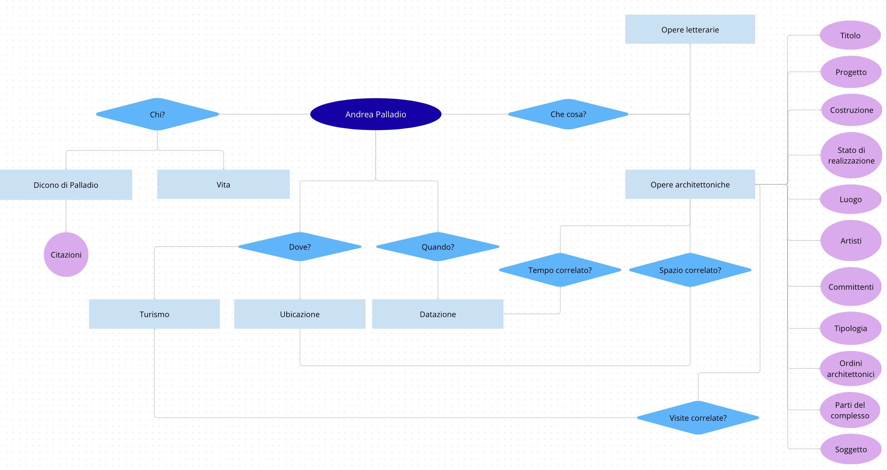
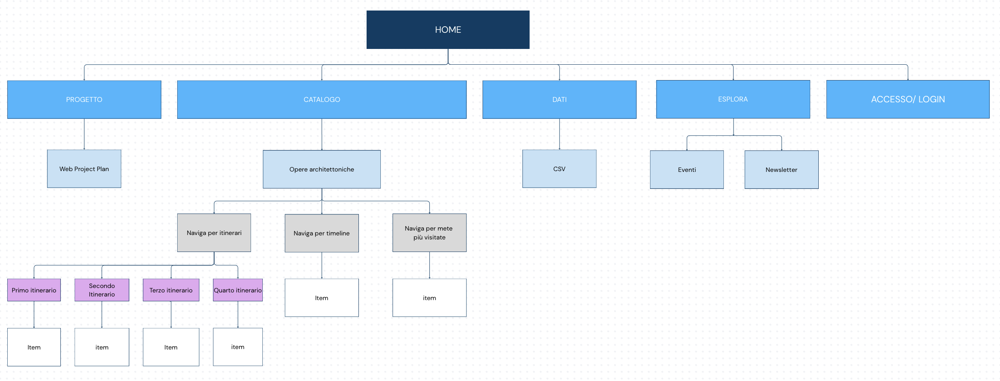

L’obiettivo di questo progetto è realizzare un sito web con un’interfaccia accattivante e non datata che permetta la consultazione delle opere architettoniche di Andrea Palladio, contestualizzate nel territorio e nello spazio, in modo tale da valorizzare il patrimonio culturale del nostro Paese (tramite i percorsi prestabiliti dal sito UNESCO, una linea temporale e una sezione dove gli utenti possano prendere parte alla valorizzazione delle opere), accessibile ad esperti o a chi vuole visitare la zona.
La finalità della risorsa è rivolta all’offerta di una navigazione semplice e accessibile del patrimonio artistico dell’architetto Andrea Palladio, collocando le opere architettoniche dell’artista in un preciso contesto (ad esempio geografico e temporale). Il Sito web sarebbe, inoltre, consultabile da qualsiasi Device (suggerendo però l’uso di computer) che permetta una navigazione fluida, organizzata e semplice, comprensibile anche a e da chi non è esperto di architettura.
Il principale ambito disciplinare che interessa la raccolta è quello artistico- architettonico.
Il progetto è stato pensato per essere consultato da un pubblico ampio, dagli appassionati di architettura all’utente medio o chiunque desideri conoscere la storia del territorio tramite le opere architettoniche di Andrea Palladio.
All’utente è reso possibile un accesso libero a una raccolta di immagini (accompagnata da metadati e dati) che si adatti ai vari mezzi di comunicazione (PC, tablet e smartphone) per facilitare la consultazione delle risorse tramite Devices sia riservati all’uso domestico che portatile, in loco, visitando le opere architettoniche. Nonostante questo, alcune pagine del sito possiedono degli elementi che si adattano meglio a una consultazione da computer, per cui si consiglia una prima visita tramite il suddetto dispositivo.
Con la possibilità di una futura implementazione, all’interno del progetto si è pensato di aggiungere una sezione “Accedi", per garantire un’esperienza personalizzata all’utente e che tenga in considerazione quelle che sono le sue preferenze (l’utente avrebbe così la possibilità sia di salvare le opere nei suoi “Preferiti”, come di visualizzare la Newsletter o la sezione “L’esperto consiglia”, entrando all’interno della community; allo stesso modo, avrebbe la possibilità di partecipare attivamente alla valorizzazione degli item presenti nel catalogo- si veda la sezione “Le mete più visitate”). In generale, il sito rimane comunque consultabile da e accessibile a chiunque navighi sul Web.
Il progetto presenta quindi un design multipiattaforma, ma preferisce una prima consultazione con un computer fisso per apprezzare meglio le risorse fornite.
Le risorse fornite dal sito web variano dalla forma grafica (immagini delle mete), alla forma testuale (metadati). La presenza di mappe geografiche navigabili e timeline interattive permette una consultazione partecipata e attiva dal lato utente, il quale può navigare i contenuti seguendo sia itinerari prestabiliti sia in base a un’organizzazione temporale.
I contenuti sono stati presi principalmente dal sito ufficiale UNESCO dedicato ad Andrea Palladio, il quale permette la libera condivisione, riproduzione, distribuzione, comunicazione al pubblico, esposizione al pubblico, rappresentazione, esecuzione e recitazione del materiale da esso presentato con qualsiasi mezzo e formato e la modifica (trasformazione del materiale e utilizzo per opere derivate) per qualsiasi fine, anche commerciale, “con il solo onere di attribuzione, senza apporre restrizioni aggiuntive”. I suoi dati, documenti e informazioni pubblicati sul sito sono rilasciati con licenza CC_BY 4.0.
Condizioni da rispettare:
I metadati e dati descrittivi dei singoli item, invece, sono da attribuire al catalogo della Mediateca del Centro Internazionale di Studi di Architettura Andrea Palladio, il cui sito applica delle restrizioni nell’utilizzo dei materiali solo per quanto riguarda le immagini; pertanto, per il repertorio grafico ho attinto dalle risorse digitali offerte da Wikipedia, che permette la ricondivisione con la licenza Creative Commons.
Per l’attribuzione di copyright delle immagini, vedi la sezione “Bibliografia e sitografia”.
Sul Web esistono già numerosi siti dedicati ad Andrea Palladio, dai portali specifici riservati alle singole opere architettoniche a veri e propri cataloghi che raccolgono l’intera produzione dell’architetto.
La mediateca del Centro Internazionale di Studi di Architettura Andrea Palladio rappresenta una delle principali fonti per lo studio dell’architettura palladiana, con una documentazione ampia e strutturata a disposizione dell’utente. Il catalogo raccoglie un vasto patrimonio di materiali, con collezioni di:
Il catalogo ricopre un ruolo di riferimentofondamentale per la descrizione delle opere, offrendo metadati ricchi e accurati. Tuttavia, il sito presenta un’interfaccia piuttosto datata, con una navigazione concepita secondo una logica di consultazione prevalentemente archivistica, più che esplorativa; infatti, l’utente può ricercare le opere attraverso campi descrittivi e filtri catalografici.
La Mediateca mette inoltre a disposizione una localizzazione cartografica delle opere, ma questa funzione ha un ruolo secondario rispetto alla consultazione catalografica e non è pensata come strumento di esplorazione narrativa del territorio, limitandosi a localizzare gli edifici, non a costruire un'esperienza di esplorazione del territorio.
La navigazione cartografica, inoltre, non è integrata con sistemi di percorso guidato e non sono presenti strumenti di navigazione con una timeline interattiva o per “hotspot” tematici. Inoltre, non è integrata con sistemi di percorso guidato e non sono presenti strumenti di navigazione con una timeline interattiva o per “hotspot” tematici.
Se da un lato il catalogo del Palladium museum nell’interfaccia include anche una sezione newsletter (implementabile in futuro anche in questo progetto), dall’altro presenta un ulteriore limite: l’assenza di una struttura orientata all’utente. Infatti, il sito non sembra mettere a disposizione funzionalità di personalizzazione come:
Infine, il progetto adotta la struttura dei metadati del catalogo CISA e la integra con informazioni ricavate dalle schede descrittive delle singole opere.
Un secondo sito ricco di risorse è il portale realizzato con i fondi della Legge 20 febbraio 2006, n. 77 (“Misure speciali di tutela e fruizione dei siti e degli elementi italiani di interesse culturale, paesaggistico e ambientale, inseriti nella “lista del patrimonio mondiale”, posti sotto la tutela dell’UNESCO”).
Rispetto al catalogo del Palladio Museum, questo portale presenta un’interfaccia più pulita e moderna, orientata alla divulgazione turistica.
Difatti, offre una navigazione delle opere architettoniche palladiane sia libera sia basata su itinerari UNESCO prestabili
Tuttavia, il sito risulta parziale, in quanto descrive solamente 25 componenti del Sito Patrimonio Mondiale UNESCO, la Città di Vicenza e le Ville del Palladio nel Veneto, limitando, così, il catalogo alle opere comprese nel sito patrimonio mondiale UNESCO.
Inoltre, la navigazione su cartina è suddivisa fra “Città di Vicenza” e “Le Ville”, senza una vera integrazione unitaria del sistema territoriale.
Manca poi una navigazione mirata per timeline o criteri interattivi come “Le mete più visitate”. Un elemento interessante è, invece, la sezione dedicata a news ed eventi, la quale introduce una dimensione più aggiornata e divulgativa.
In sintesi, il sito del catalogo del Palladio Museum costituisce un ottimo modello di catalogo archivistico, con dei metadati completi, ma limitata esperienza di esplorazione visiva, mentre il progetto qui presentato:
Il sito UNESCO, invece, è particolarmente efficace in ambito turistico, grazie agli itinerari già strutturati. Rispetto a questo, il progetto propostosi propone di:
In entrambi i siti sembrerebbe mancare una struttura di accesso utente che offra un’esperienza di browsing personalizzata o la possibilità di salvare opere di interesse per l’utente in raccolte dedicate.
Questi due siti rappresentano dei punti di riferimento per lo studio e la valorizzazione dell'architettura palladiana, ma rispondono a esigenze differenti:
Il progetto presentato nasce con l'obiettivo di integrare i punti di forza di entrambe le risorse in un'unica piattaforma, combinando l'accuratezza dei metadati con modalità di navigazione più intuitive e orientate all'esplorazione, come mappe, timeline e percorsi tematici.
In una prospettiva di ulteriore implementazione, il progetto prevederebbe un portale di accesso per l’utente, tramite il quale offrire un’esperienza di browsing mirata, con, per esempio, la possibilità di:
Europeana è una piattaforma digitale che “fornisce ad appassionati di patrimonio culturale, professionisti, insegnanti e ricercatori un accesso digitale a materiale relativo al patrimonio culturale europeo”.
Pur non essendo un sito web tematicamente dedicato all’architettura palladiana, risulta essere un significativo punto di riferimento per la progettazione delle modalità di interazione e accesso ai contenuti. La piattaforma, infatti, integra funzionalità avanzate di esplorazione, come collezioni tematiche, contenuti in evidenza, storie editoriali e contenuti popolari.
Rilevante è la presenza di un sistema di account utente che consente di salvare contenuti, creare raccolte personalizzate, condividere elementi e interagire attivamente con il patrimonio digitale.
Per questi motivi, in una prospettiva di implementazione futura, si potrebbe integrare una sezione di accesso/iscrizione utente, in modo analogo a Europeana, permettendo funzioni come:
aumentando la diffusione e la valorizzazione dei contenuti.
Sarebbe interessante anche integrare all’interno di ogni singolo itinerario e item il numero di visualizzazioni, come anche la possibilità da parte dell’utente di lasciare una valutazione a fine visita o una recensione.
Questo progetto integra quindi:
Il tutto si ispira inoltre ai modelli di interfaccia della homepage, architettura dell’informazione e accesso utente forniti da Europeana.
Pertanto, il progetto unisce la componente di contenuto archivistico del Palladium museum all’organizzazione turistica e per itinerari del sito UNESCO, aggiungendo, allo stesso tempo, altre modalità di esplorazione del catalogo, come ad esempio per linea del tempo interattiva. Ne risulta una piattaforma ibrida, la quale, a partire dalla consultazione più specialistica del primo sito e divulgativa del secondo, è pensata per offrire una consultazione aperta sia a utenti esperti sia a un pubblico non specializzato.


Le categorie descrittive degli item sono state prese sia dal catalogo del CISA che seguendo il sistema Dublin Core. In particolare:
L’architettura logica d’interfaccia prevede:
Nel sito e pertanto presente un footer, diviso in credits (contenenti il rinvio a Web project plan e i contatti) e in copyright (paternità e data).
La Homepage, oltre a presentare (uguale in tutte le pagine) una navigation bar di rimando alle altre pagine del sito:
possiede una hero-image e un hero-text di introduzione all’argomento del sito.
Il corpo della pagina presenta un testo coerente e funzionale a una lettura facilitata. In particolare, il layout rimane costante nel passare da una pagina a un’altra, con una scelta cromatica e di font che viene rispettata nel complesso dell’intero sito web.
Le possibili variazioni rispetto allo schema generale rispondono alla necessità di adattarsi al contenuto specifico presente nelle diverse pagine.
La pagina catalogo è divisa in tre tabs per far visualizzare all’utente le diverse possibilità di esplorazione della raccolta, dalla navigazione per itinerari o per timeline a quella per mete più visitate.
L’esplorazione per itinerari presenta un’organizzazione a cards ordinate per permettere all’utente di visualizzare i possibili itinerari offerti (pagine a cui il catalogo rinvia tramite l’uso di buttons).
La seconda tab mostra gli items ordinati in una timeline , mentre nella terza tab, “Le mete più visitate” le opere sono visualizzate dall’utente grazie a una CSS Image Gallery.
Tutti e tre i canali di esplorazione del catalogo presentano una pagination, nell’eventualità di aggiungere più elementi alla raccolta. In prospettiva di una futura implementazione, all’interno della left column del catalogo è stata pensata una navigazione aggiuntiva, che risponderebbe a un’interrogazione per Provincia, Comune, Ordine alfabetico e Ricerca per parole chiave.
Le pagine itinerari e item presentano nella barra laterale una navigazione per breadcrumbs, una navigazione contestuale (che rinvii a siti web differenti dal progetto per dare maggiori informazioni all’utente) e, nel caso della pagina item, i metadati descrittivi dell’opera
La pagina dati possiede una tabella con scroll orizzontale per la raccolta delle risorse e le loro descrizioni
Nella pagina del Progetto, la barra laterale presenta un vertical- menu, in modo da poter raggiungere più facilmente la sezione del Web Project Plan desiderata.
In generale, le diverse barre di navigazione si basano sui concetti di:
- Navigazione principale
La barra di navigazione principale è stata posta nella zona di testata per consentire all’utente una navigazione della struttura semplice e chiara, con la possibilità di visitare le cinque pagine principali del sito web (principio di memorizzabilità e learnability ).
Sono state sfruttate delle icone ad hoc per rinviare i concetti esplicitati all’interno dei collegamenti.
È inoltre prevista sempre dentro la barra di navigazione principale un’area d’accesso o iscrizione volta a personalizzare l’esperienza dell’utente (vd metanavigazione). L’area di accesso è stata resa con split navigation.
- Navigazione secondaria e contestuale
E’ presente, all’interno di diverse pagine del sito, anche una barra di navigazione laterale che assolve a varie funzioni:
All’interno delle pagine dedicate agli itinerari è stata inserita una navigazione contestuale, box di approfondimento laterale dove vengono citati e riconosciuti i link di provenienza degli itinerari stessi, sia per accreditare correttamente il sito produttore dei percorsi che permettere all’utente di consultare la fonte originaria. Tali box si chiamano contestuali perché sono specifici per la pagina corrente, cambiano al cambiare della pagina.
La stessa cosa è stata fatta per le pagine item, le quali riportano nella navigazione contestuale un rinvio alla pagina a loro dedicata all’interno del catalogo del Palladio Museum.
- Briciole di pane
Ogni pagina è fornita di breadcrumbs all’interno della barra di navigazione laterale, in modo tale da segnalare all’utente in quale punto della struttura si trovi, ricostruendo i livelli gerarchici che ha consultato prima di arrivare alla suddetta pagina. Attraverso questo sistema di navigazione l’utente può ripercorrere le pagine precedenti a quella corrente, fino a tornare alla Home (La stessa immagine di testata, una volta cliccata, permette il rinvio alla homepage).
- Metanavigazione
La metanavigazione implementata è attualmente rivolta al piede di pagina, dove sono contenute le informazioni su copyright, credits, licenze e rinvio al Web Project Plan.
Sarebbe interessante sviluppare altri strumenti di aiuto e funzionalità generali, come:
Questo renderebbe più fruibile il sito web, permettendo all’account loggato di salvare opere culturali, misurarle con un ranking, scrivere recensioni e rimanere aggiornato su eventi e novità riguardante l’ambito preso in esame dal progetto.
All’interno del catalogo, il sito integra una navigazione delle opere per linea del tempo e mappa dei luoghi interattive. Per quanto riguarda la homepage, invece, sono presenti delle proposte di navigazione alternativa, per:
Il design dei vari wireframes, ovvero il disegno delle componenti logiche della navigazione e dell’interfaccia, è stato progettato tramite il programma Wireframe.cc.
Si è pensato a mantenere una struttura di base coerente, dove il posizionamento dell’intestazione, immagine/ logo, barre di navigazione primaria, secondaria e contestuale, briciole di pane e metanavigazione, con il footer, rimane costante a tutte le pagine (le eventuali variazioni sono da imputarsi a una maggior leggibilità della pagina specifica).
I box ideati nella risorsa possono essere di approfondimento (navigazione contestuale) o, ancora, box di contenuto, in modo da strutturare il più possibile i contenuti su isole tematiche o fasce di contenuto.
Nell’implementazione dei vari canali di navigazione, vi è il tentativo di non costringere mai l’utente finale ad usare il pulsante indietro del browser (si vedano le briciole di pane, il logo della testata che rinvia alla home).
Anche le diverse possibilità di browsing sono pensate per facilitare la navigazione e renderla il più piacevole possibile all’occhio dell’utente, incentivando così la consultazione del sito web.
All'interno del sito viene utilizzato lo stesso stile per colori, font, dimensioni, posizionamenti, etc., con al massimo qualche variazione sempre per rendere maggiormente leggibile la sezione di interesse
Per le parti testuali, si è pensato di aumentare l'interlinea e di non giustificare il testo, seguendo un modello Wiki Like. Per le porzioni di testo importanti, viene utilizzato il tag strong (grassetto), mentre per le citazioni o titoli di libri il tag em (corsivo).
L'uso di:
E l'aggiunta di:
Sono stati previsti per link e immagini gli attributi @title e @alt per seguire la norma di accessibilità.
Per la scelta dei colori si è fatto riferimento al Generatore di palette e ruota colori di Adobe Express. Ci si è basati sui principi della teoria del colore nel web di:
Nell'ottica di un uso sapiente, tecnicamente sostenibile e adeguato, i colori di tonalità più forte e scura sono stati adoperati per la barra di navigazione primaria, button, etc, mentre i colori di tonalità più chiara per la parte contenente testi e immagini.
Il font Tahoma è stato scelto tra i font di sistema creati da Microsoft perché risulti safe per il web; nel caso in cui il browser non riuscisse a leggerlo, vengono adoperati due fallback: Verdana e sans-serif.
Infine, le icone sono state selezionate dalla libreria di Font Awesome (4.7) e adoperate per evocare concetti e non appesantire la leggibilità del sito.
Per quanto riguarda la categoria dei servizi, sono messi a disposizione dell’utente percorsi alternativi ai soli canali di navigazione primaria, secondaria e contestuale. I diversi strumenti di browsing utilizzati sono:
Altri strumenti di interazione utili alla navigazione del sito sono:
Nel progetto sarebbero previste, ma non ancora implementate, delle sezioni di:
CITAZIONI HOMEPAGE:
Citazione STRUMENTI PER LA CREAZIONE DEL SITO
SITOGRAFIA
COPYRIGHT PHOTOS
Le immagini sono state reperite tramite Wikimedia Commons, che rende disponibili file con licenze indicate per ciascuna risorsa. Ogni immagine è stata utilizzata nel rispetto della specifica licenza riportata nella relativa pagina.